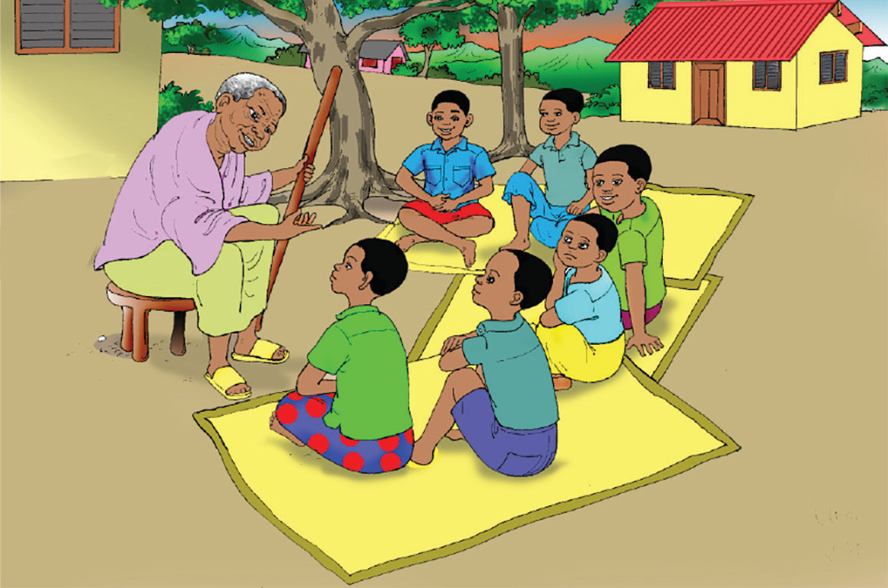

Kielelezo namba 2: Watoto wakisikiliza masimulizi
Tunaweza kusimulia taarifa za maarifa na ujuzi wa asili na urithi wa historia katika mikusanyiko mbalimbali. Kwa mfano, tunaweza kusimulia katika paredi za asubuhi na jioni shuleni kama inavyoonekana katika Kielelezo namba 3.

Kielelezo namba 3. Mwanafunzi akisumulia jambo katika paredi